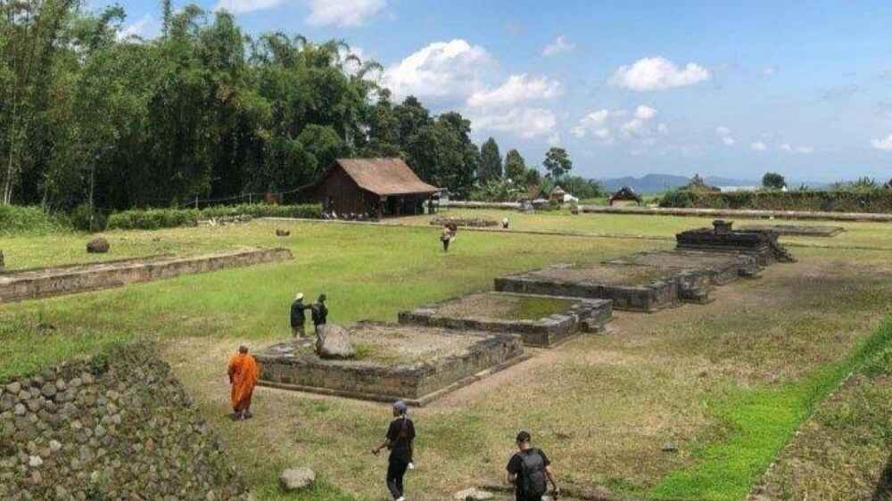

1. Asal-Usul Penemuan
Berbeda dengan candi lain yang ditemukan dalam posisi berdiri, Situs Liyangan ditemukan secara tidak sengaja oleh para penambang pasir di tahun 2008. Situs ini terkubur sedalam 10-12 meter di bawah tanah akibat letusan dahsyat Gunung Sindoro pada masa lampau. Hal ini membuat Liyangan sering dijuluki sebagai "Pompeii-nya Indonesia".

2. Struktur Permukiman
Liyangan bukan hanya sekadar tempat ibadah atau candi tunggal. Situs ini merupakan kawasan permukiman kuno yang lengkap. Di dalamnya terdapat sisa-sisa jalan berbatu, pagar pelindung, hingga area pertanian kuno. Penemuan ini membuktikan bahwa nenek moyang kita sudah memiliki tata kota yang sangat teratur sejak abad ke-9.
Ingin Melindungi Warisan Ini?
Mari kita jaga kebersihan dan kelestarian situs sejarah saat berkunjung.